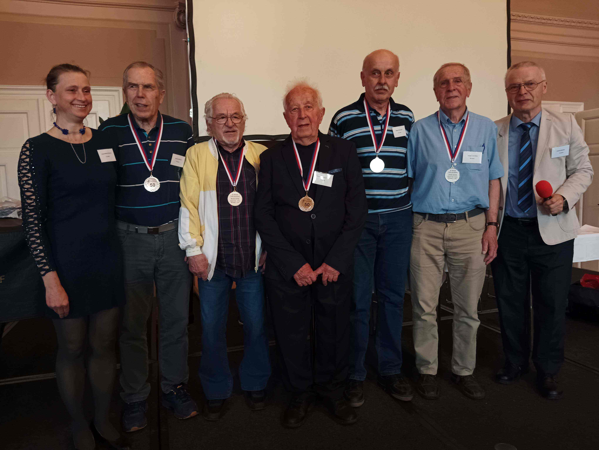
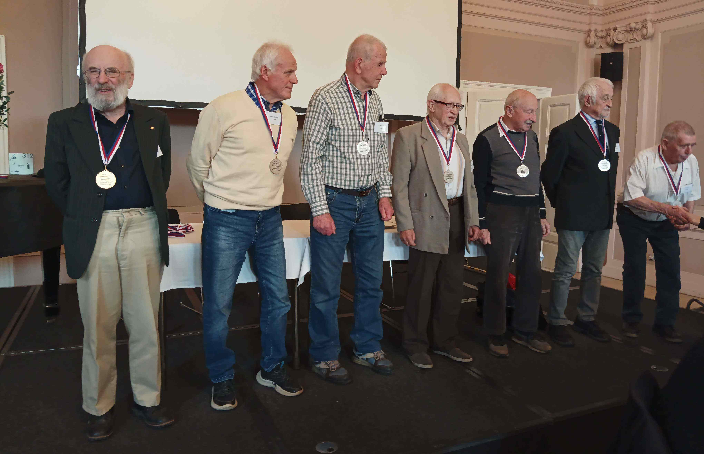
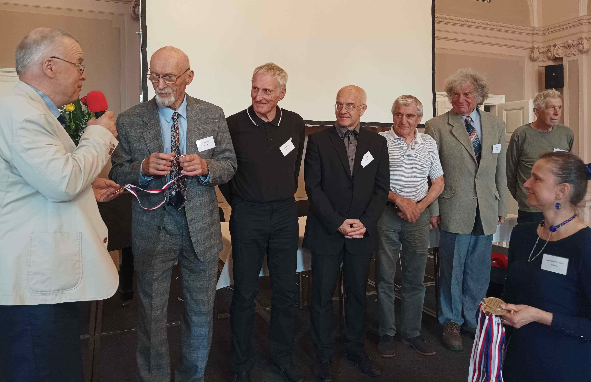
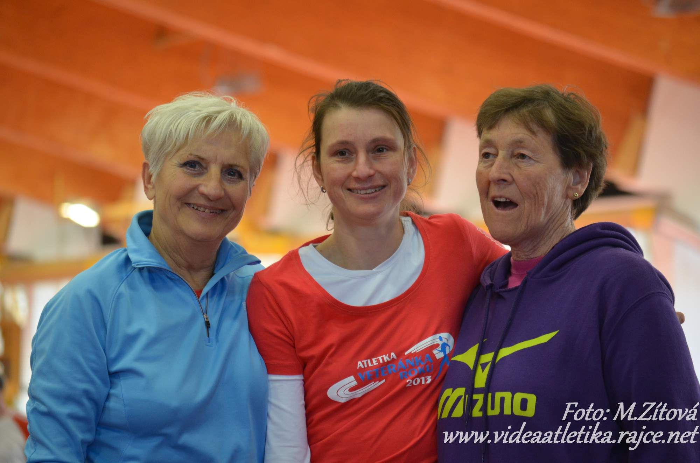
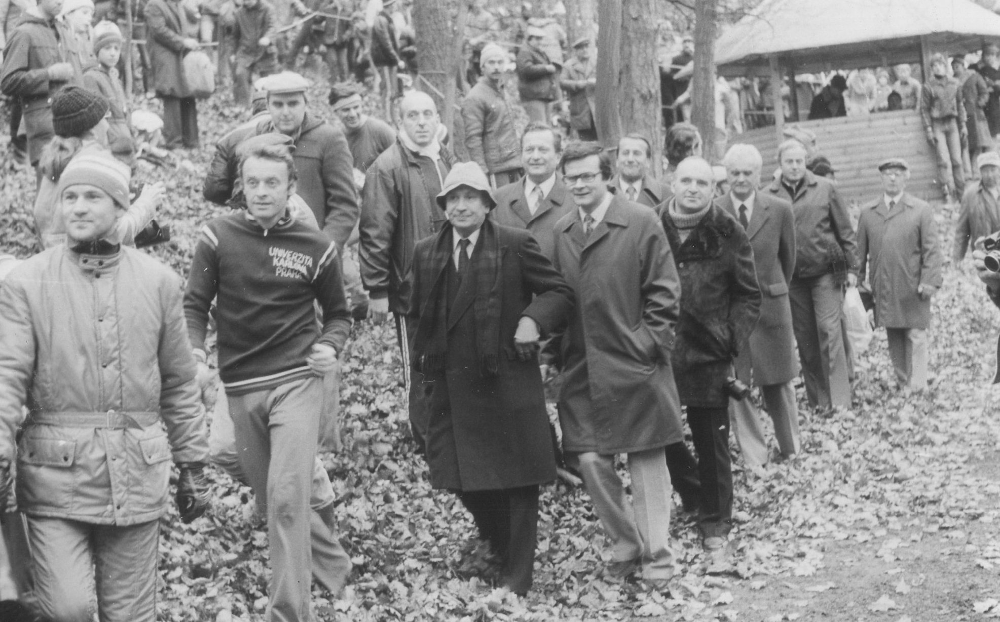
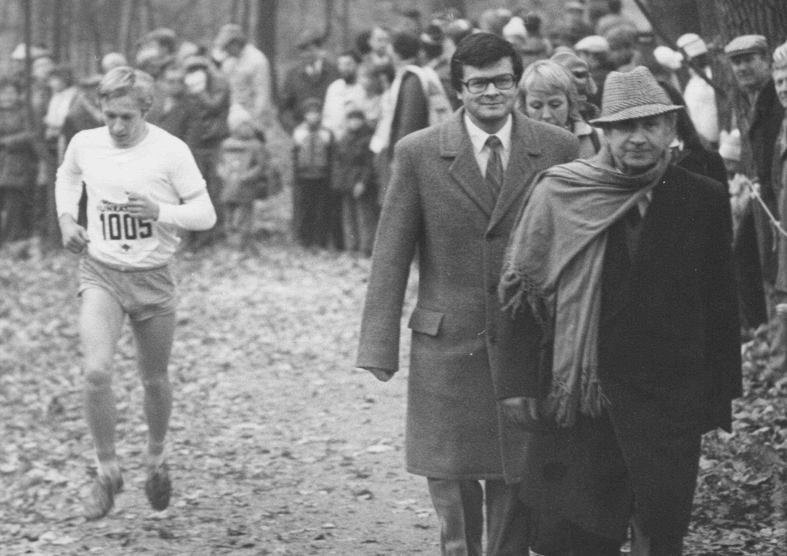
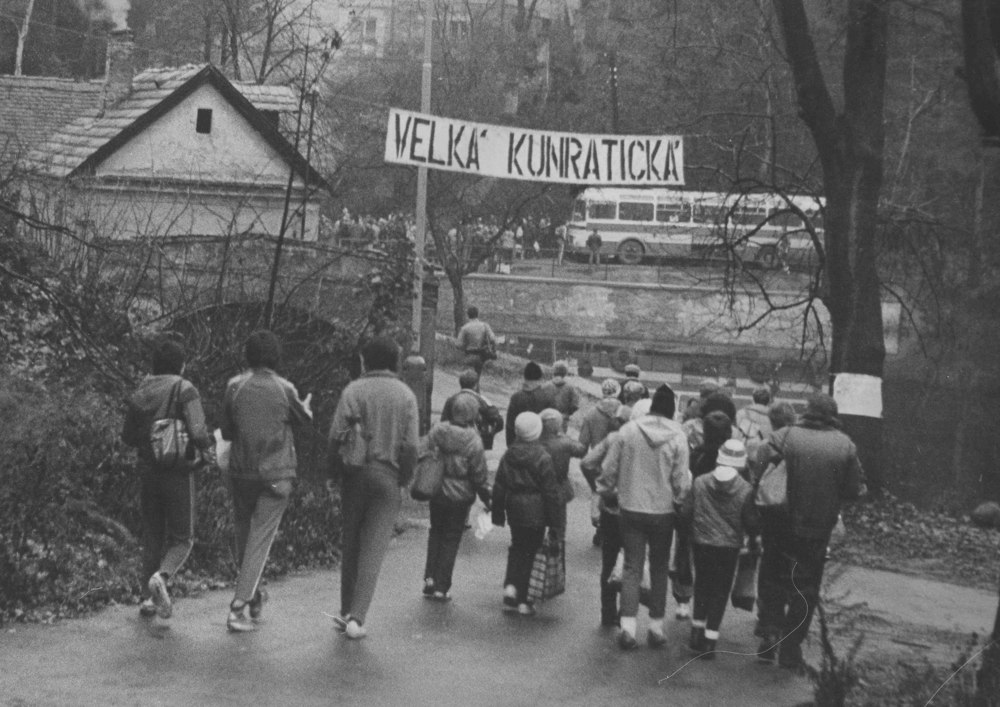
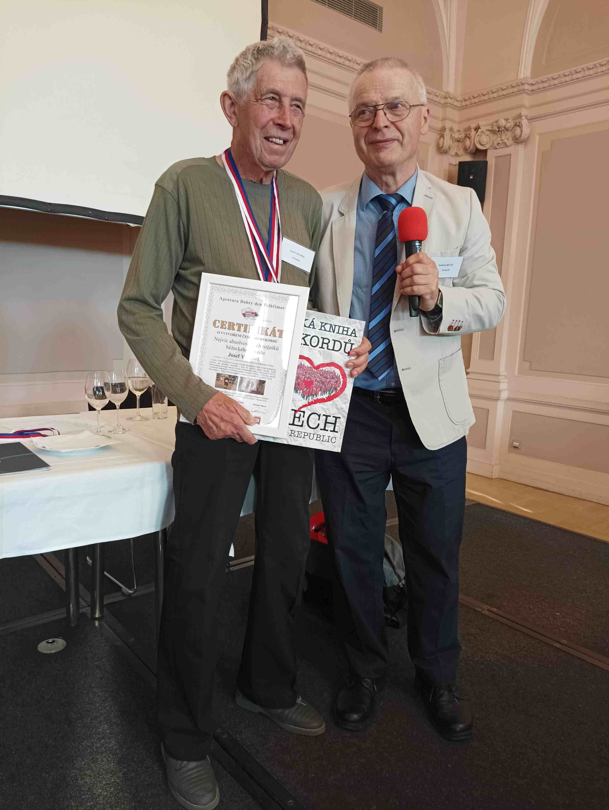

Veterán
Velké kunratické
Časopis určený veteránkám, veteránům a všem příznivcům legendárního závodu
Číslo 5 / listopad 2023 Předchozí čísla: XI/2020, V/2022, XI/2022, V/2023

Medaile za věrnost Velké kunratické převzali veteráni s 50 a více starty dne 15. května 2023 na tradičním květnovém srazu veteránů VK, který se díky iniciativě veterána Pavla Nováka a vstřícnosti vedení městské části Prahy 4 letos uskutečnil ve společenském sále ÚMČ Praha 4 v Táborské ulici 500/30. Na titulním snímku je první ze tří skupin oceněných: Jaroslav Bednář (1939, 56 startů), Miroslav Eichler (1940, 50 startů, v roce 1963 skončil celkově 3., v roce 1965 dokonce 2. za Chudomelem výkonem 12:10,4), František Čmelinský (1930, 56 startů), Michal Ezechiáš (1952, 51 startů) a Jaromír Javůrek (1941, 50 startů). Medaile předávali Jindřich Bouše a Lenka Borovičková.

S medailemi „Za věrnost Velké kunratické“: Zleva Petr Matiášek (1946, 50 startů), Miloslav Klimánek (1947, 51 startů, dvojnásobný vítěz veteránské kategorie v letech 1989 a 1990), Jan Novotný (1945, 53 startů), Stanislav Plešinger (1938, 58 startů), Ivan Pohorský (1944, 57 startů), Arnošt Poisl (1939, 55 startů) a Rudolf Mráz (1941, 50 startů).

Poslední skupina oceněných: Ivan Šperling (1941, 59 startů, kandidát na zlatou medaili za 60 účastí), Pavel Polák (1946, 50 startů), Luděk Sedlák (1954, 50 startů). Zbyněk Sadil (1942, 54 startů), Miloš Šimon (1944, 51 startů) a rekordman Josef Vonášek (1937, dosud aktivní běžec s neuvěřitelnými 63 starty).
Běžkyně, chodkyně, veteránka VK a mladá babička:
Lenka Borovičková
Na úvodních snímcích z předávání medailí zasloužilým veteránům „Za věrnost VK“ figuruje kromě Jindry Boušeho také Lenka Borovičková, členka organizačního výboru veteránů VK. Když jsem Lenku požádal o odpovědi na tradiční anketní otázky, kladené veteránům představovaným na stránkách tohoto časopisu, věděl jsem, že je všestrannou a velmi úspěšnou atletkou, a to i na mezinárodní úrovni. Přiznám se ale, že výčet jejích úspěchů, který mi poslala až po dodatečném vyžádání, mě ohromil. V kategorii žen má dvě stříbrné a jednu bronzovou medaili z mistrovství republiky na 20 km chůze, mezi veteránkami pak výčet úspěchů zabere několik stránek formátu A4. Vybereme-li pouze medaile z mistrovství světa a Evropy a z mezinárodních soutěží „Masters“, napočítal jsem celkem 14 zlatých a přibližně stejný počet stříbrných a bronzových medailí, a to především v chůzi na 5 km, 10 km či 20 km, ale i v krosu a v bězích do vrchu. V roce 2013 na veteránském MS v brazilském Porto Alegre získala Lenka tři zlaté medaile (výkony v chůzi na 5, 10 a 20 km stojí za zaznamenání: 28:01, 59:34 a 2:07:48) a byla vyhlášena nejlepší českou veteránkou roku, v letech 2016 a 2018 obsadila v této anketě 3. místo. V roce 2016 byla vyhlášena nejlepším amatérským sportovcem Prahy 5.

Vyhlášení nejlepších veteránek roku 2013: Slávka Ročňáková, Lenka Borovičková a vrhačka Jarka Klimešová
Lenka je stále ještě mladou veteránkou, v letošním roce oslavila teprve padesátiny (věřím, že v této souvislosti není uvedení věku žádným prohřeškem), přesto se kromě sportovních úspěchů může pyšnit i tím, že už je mladou babičkou. Mnoho let sportování i milých babičkovských starostí má Lenka ještě před sebou, a tak nezbývá než popřát, aby ta další léta byla neméně úspěšná jako ta dosavadní.
Anketa pro Lenku Borovičkovou
1/ Řekni v několika větách něco o sobě: odkud jsi, kde žiješ, co rodina, kde pracuješ a čím ses v životě zabývala, jak a kdy ses dostala ke sportu.
Narodila jsem se v Praze. Do konce studia kladenského gymnázia jsem bydlela s rodiči v Kladně. Od začátku studia VŠ jsem v Praze. Mám dvě dospělé děti, dcerka je již vdaná a mám od ní vnuka. Pracuji 21 let na ÚOCHB v Praze na Flemingově náměstí. Sportuji od základní školy, rekreačně a jednu sezónu i závodně jezdectví (vytrvalost), závodila jsem přes 20 let v orientačním běhu a již více než 10 let závodím v atletice (dlouhé tratě, sportovní chůze, přespoláky).
2/ Kam až jsi to ve sportu dotáhla a co považuješ za své největší sportovní úspěchy?
Ze závodů Masters mám několik titulů Mistryně světa (individuální i týmové) a spoustu dalších medailí z různých světových a evropských atletických soutěží. V Česku jsem získala dvě stříbrné a jednu bronzovou medaili na Mistrovství ČR v chůzi na 20 km žen. Jsem držitelkou několika českých chodeckých veteránských rekordů v kategoriích W40, W45 a W50.
3/ Co pro tebe znamená Velká kunratická?
VK je pro mne již tradice a možnost porovnat se s kamarády a soupeři z jiných sportů.
4/ Kdy jsi běžela svou první Velkou kunratickou a jaké máš na ni vzpomínky?
Velké kunratické jsem se poprvé zúčastnila v roce 1994, kdy jsem běžela ženskou trať i trať přes Hrádek, ale bohužel na cizí jméno. Tehdy byl mojí dceři necelý půlrok. Byl to silný zážitek a začátek série, která pokračuje dodnes.
5/ Vzpomeneš si na nějaký ročník, který ti utkvěl nejvíc v paměti? Čím především?
Bohužel si již nepamatuji přesný letopočet, ale ještě se kupovala čísla na Děkance. Tehdy jsem zajišťovala start pro svého kamaráda, který byl tou dobou v USA. Bohužel jeho návrat se zkomplikoval a na start se postavit nemohl. Běžela jsem tedy na jeho číslo a po doběhu mi bylo nabídnuto jedním členem našeho oddílu OB další. Za necelou hodinu jsem se tedy znovu postavila na start. Potěšilo mne, že jsem podala při obou startech přes Hrádek docela vyrovnaný výkon (časy asi 16:50 a 17:00). Samozřejmě jsem před tím ráno absolvovala ženskou trať.
6/ Patříš k atletům, kteří jsou stále aktivní a během roku startují na řadě běžeckých a chodeckých závodů. Prozraď svůj recept, jak trénuješ a jak se připravuješ na závody.
Snažím se přes zimu nabrat nějaký objem hlavně chůzí, částečně během, a když jsou podmínky, tak i na běžkách. Na halové závody mi trenér připraví plán (dlouhé pochody a výklusy, krátké i delší úseky a další tréninkové prostředky). V rámci přípravy absolvuji též několik chodeckých (hala) a běžeckých závodů. Přípravu mívám většinou naplánovanou i na letní sezonu. Mým trenérem je Karel Hovorka, mimo jiné je také veteránem Velké kunratické.
7/ Jaké máš před sebou další výzvy a čeho bys ještě chtěla v životě dosáhnout?
Pokud mi zdraví i další okolnosti dovolí, ráda bych se i nadále zúčastňovala tuzemských i mezinárodních závodů Masters. U nás chci případně startovat i v kategorii dospělých (liga a mistrovství ČR, hlavně ve sportovní chůzi). Doufám, že se mi bude dařit (alespoň občas) dosahovat předních umístění.
Rok 1983 – 50. Velká kunratická
Asi nejslavnější Velká kunratická se uskutečnila před 40 lety v roce 1983 (letí to, mnozí současní veteráni si na tento ročník dobře pamatují). Šlo o jubilejní 50. ročník, který se konal pod záštitou Mezinárodního olympijského výboru za účasti předsedy MOV Juana Antonia Samaranche. Závod měl slavností ráz, účastníci obdrželi v cíli pamětní medaile a prvním běžcům osobně poblahopřál sám předseda MOV, který poznal atmosféru závodu již v roce 1981, kdy poprvé přijal pozvání pořadatelů. Velké kunratické se v roce 1983 zúčastnilo rekordních 9128 běžců, ve všech kategoriích kromě dětí se startovalo po trojicích, což bylo vyzkoušeno již v předchozím 49. ročníku. Závod měl velkou publicitu, podrobně o něm informovaly všechny sdělovací prostředky. Na druhé straně však došlo k tomu, co jednou přijít muselo: kapacita kunratického lesa byla vyčerpána, bylo jasné, že další navyšování počtu startujících je nemožné. „Počet startujících již dosáhl maxima, které prostor a technické podmínky umožňují. Jeho další zvýšení již není vhodné a ohrozilo by přírodní prostředí a regulérnost závodu“, psalo se v knize výsledků, která obsahovala 176 hustě popsaných stran.

Příprava 50. ročníku: V roce 1981 přijal Juan Antonio Samaranch pozvání do Kunratic, aby se seznámil se závodem a jeho atmosférou. Na snímku Vladimíra Podroužka si prohlíží trať za doprovodu „celého ČSTV“. Významnou roli při návštěvě předsedy Mezinárodního olympijského výboru sehrál Dr. František Dvořák (s nápisem na hrudi kráčí před J. A. Samaranchem). Předseda MOV byl návštěvou nadšen a dva roky poté převzal MOV záštitu nad jubilejním 50. ročníkem.
Počasí, účast, celkové výsledky
Pomůžeme si opět citací z výsledkové brožury: „Počasí závodu přálo, bylo sucho, slunečno a mírný mráz, a tomu odpovídal i nízký stav vody v potoce. Zmrzlý povrch jindy mokrých míst a provedené stavební úpravy, zpevněné povrchy a přemístění předběžných výsledků umožňovaly větší rozptýlení účastníků v prostoru závodu. Suché počasí se
projevilo sesouvajícím se povrchem ve stoupání na Hrádek a prašností některých úseků tratí“.
Celkový počet účastníků (9128) byl zmíněn v předchozím odstavci, dodejme jen, že tento počet představoval 94,3 % všech přihlášených. Nejpočetnější byla kategorie do 29 let (2171), kde startovali mnozí dnešní veteráni. Pro zajímavost zde uvedeme ty, kteří se umístili v první stovce (s omluvou těm, které jsem ve výsledcích přehlédl): 31. Suchý 12:41,7, 39. Špičák 12:47,8, 58. Řežábek 13:02,6, 64. Smrčka 13:03,6, 89. Sedlák 13:15,8, 97. Michalička 13:19,0. Na čelných místech v kategorii 30-39 čteme jména: 3. Fr. Pechek 12:00,0, 5. Laholík 12:33,6, 15. Hovorka 12:51,7, 17. Peterka 12:54,4, 21. Zajíc 12:59,3, 24. Laciga 13:04,9, 51. Jurák 13:38,3 a i zde následují mnozí další současní veteráni. V kategorii nad 40 let najdeme některé dnešní osmdesátníky a starší, z nichž mnozí ještě nedávno závodili (22. Čech 14:17,7, 55. Eichler 14:51,3, 62. Kervitcer 14:55,2, 97. Karlík 15:18,4, 115. Fr. Doleček 15:29,2 a řada dalších, kteří již bohužel nejsou mezi námi. Dva borci z tehdejší kategorie 40-49 běhají dodnes: Ivan Šperling skončil 114. (15:29,0), Josef Vonášek 425. (17:37,6). Oba byli už tenkrát zařazeni do kategorie veteránů.
Z dnešního hlediska je překvapivé, jak nízká byla před 40 lety účast ve vyšších věkových kategoriích. Tenkrát nebylo běžné, že by šedesátníci a starší ještě aktivně běhali. Místo obdivu a uznání sklízeli často posměch a i proto jejich sportování bylo spíše výjimkou. Bylo to znát i na rekordním 50. ročníku, kde v nejstarší kategorii, jíž byla tehdy kategorie nad 60 let, startovalo (dnes bychom řekli „pouze“) 78 běžců. Stejně překvapivě nízká je celková účast žen. Ve třech věkových kategoriích dospělých jich startovalo 646, zatímco mužů 5310. Nejstarší ženskou kategorií byla kategorie nad 40 let, kde startovalo pouhých 69 běžkyň, z nichž nejstarší byla 52letá Alžběta Havlíčková.
Celkovým vítězem v hlavní mužské kategorii se podle očekávání stal Vlastimil Zwiefelhofer před další stálicí Velké kunratické Zdeňkem Kurkou a reprezentantem na 1500 metrů Janem Kubistou. Vlastík, jak mu říkali přátelé i lidé zcela neznámí, se stal králem Kunratic už poosmé a bylo to jeho předposlední prvenství. O mimořádných běžeckých kvalitách nekorunovaného krále Kunratic svědčí vítězný čas 11:23,9, jímž by dominoval i ve většině současných ročníků. Nejrychlejší na ženské trati byla Miriam Kautová, později provdaná Stewartová, výkonem 3:50,2. Její běžecké vlohy zdědila dcera Moira, reprezentantka ČR v maratonu. Slávka Ročňáková byla v kategorii do 39 let osmá (4:33,0).
Veteráni v 50. ročníku
Výsledková listina veteránů v roce 1983 měla 72 jmen. Největší hvězdou mezi startujícími veterány byl Jaroslav Obešlo, šestinásobný vítěz, který stál v 50. ročníku na startu už po devětačtyřicáté. Vynechal jedinkrát, v roce 1939 kvůli nemoci. Kromě šesti prvenství skončil ještě čtyřikrát na 2. místě a svého času držel i traťový rekord výkonem 13:10 z roku 1943. Nejstarším veteránem byl Sláva Dlouhý, ročník 1906.
Suverénním vítězem veteránské kategorie se stal podruhé za sebou František Dvořák, který v předchozím ročníku ukončil dlouholeté kralování Karla Šerpána a přerušil jeho šňůru deseti veteránských prvenství. Tentokrát dosáhl času 13:42,5 a zvítězil s náskokem bezmála jedné minuty. Na pomyslných stupních vítězů ho doplnili Karel Šerpán a Jiří Budka. V první desítce skončili budoucí držitel zlaté medaile „Za věrnost VK“ Tomáš Karlík (6.) a letošní kandidát zlaté medaile Ivan Šperling (9.). Současný absolutní rekordman v počtu startů Josef Vonášek skončil 26. Velké pocty se dočkal Karel Šerpán, který dokázal předběhnout všechny své soupeře startující před ním, a jako prvnímu v cíli mu osobně pogratuloval a předal medaili sám předseda MOV Juan Antonio Samaranach.
Stejně jako v minulém čísle „Veterána VK“ se omlouvám veteránkám, o kterých se zde zmiňujeme jen sporadicky. V té době jejich kategorie neexistovala a na její zrod si běžkyně musely počkat ještě půl druhého desetiletí.
VYČTENO Z VÝSLEDKů 50. ROČNÍKU 1983
VK 1983 – muži celk. (5310 start.) VK 1983 – věkové kategorie muži
1. Vlastimil Zwiefelhofer 11:23,9 20-29: 1. Zdeněk Kurka 11:38,7
| 2. Zdeněk Kurka | 11:38,7 | 2. Jan Kubista | 11:42,1 |
| 3. Jan Kubista | 11:42,1 | 3. Vladislav Razým | 11:50,8 |
| 4. Jiří Čivrný | 11:47,9 |
5. Vladislav Razým 11:50,8 30-39: 1. Vlastimil Zwiefelhofer 11:23,9
| 6. Jaroslav Chlubna | 11:58,8 | 2. Jiří Čivrný | 11:47,9 |
| 7. František Pechek | 12:00,0 | 3. František Pechek | 12:00,0 |
| 8. Zdeněk Zuzánek | 12:04,5 |
9. Zdeněk Stejskal 12:09,5 40-49: 1. Nikos Cametis 13:13,5
| 10. Aleš Macháček | 12:12,6 | 2. Václav Kroupar | 13:28,8 |
| 11. Leoš Jebavý | 12:16,3 | 3. Eduard Richters | 13:33,5 |
50-59: 1. Jiří Schoppe 14:31,3 60+ 1. Jindřich Resl 15:54,3
| 2. Michal Petránek | 14:33,2 | 2. Přemysl Dolenský | 16:03,8 |
| 3. Milan Němec | 14:33,6 | 3. Josef Pejsar | 16:30,9 |
VK 1983 – veteráni (72 startujících)
| 1. František Dvořák | (1942) | 13:42,5 | 7. Václav Chudomel | (1932) | 15:26,8 |
| 2. Karel Šerpán | (1931) | 14:36,4 | 8. Jan Neuman | (1938) | 15:28,4 |
| 3. Jiří Budka | (1941) | 14:42,7 | 9. Ivan Šperling | (1941) | 15:29,0 |
| 4. Arnošt Poisl | (1939) | 14:55,0 | 10. Vladimír Junek | (1935) | 15:52,8 |
| 5. Vladimír Machač | (1937) | 14:56,7 | 11. Jiří Statečný | (1925) | 16:03,8 |
| 6. Tomáš Karlík | (1940) | 15:18,4 | 12. Ivan Plachta | (1940) | 16:09,0 |

Ještě jednou J. A. Samaranch na obhlídce trati. S číslem 1005 běží Jan Filandr.
FOTO: Vladimír Podroužek
Rok 1938 – 5. Velká kunratická
Pátý ročník Velké kunratické se konal v den, který se později stal slavným, 17. listopadu 1938. Nešlo o druhou, ale třetí listopadovou neděli, a byla to neděle obyčejná, protože listopadové události let 1939 či 1989 byly teprve před námi.
Na start Velké kunratické se postavilo 24 běžců, o čtyři méně než před rokem. Do cíle jich však dorazilo jen dvaadvacet, protože, jak praví slavný „pergamen“ s výsledky prvních deseti ročníků „Hron a Moucha přišli z jiné strany“ a nemohli tak být klasifikováni. Bloudění nebylo v prehistorii Velké kunratické žádnou výjimkou. Nestartovalo se po dvojicích, ale jednotlivě, a vzpomeňte na reportáž Evžena Rošického z předchozího čtvrtého ročníku (byl přetištěn v minulém čísle VVK): o rok dříve se totéž stalo sprinteru Jahodovi.
Ve startovní i výsledkové listině nacházíme většinou stále stejná jména, protože pravda, kterou napsal při předchozím ročníku v Haló novinách Evžen Rošický, měla už tehdy svou platnost: „Velká kunratická je velký běh; kdo ho běží, proklíná ty, co ho vynašli – ale příští rok přijde zase.“
VYČTENO Z VÝSLEDKů 5. ROČNÍKU 1938
| 1. Král | 14:32 | 4. Berta Štorkán | 15:15 | 7. Hruška | 16:08 |
| 2. Obešlo | 15:00 | 5. Novotný-Nero | 15:24 | 8. Novotný-Kelly | 16:14 |
| 3. Vondřejc | 15:06 | 6. Michalec | 15:30 | 9. Schwär | 16:20 |

Vítá vás Velká kunratická v 70. letech. FOTO: Vladimír Podroužek
Startovní listina veteránů 90. Velké kunratické – 12.11.2023 (1/7)
č. Jméno Startů Nar. 2019 2020 2021 2022 2023 ?
| 1 | Vonášek Josef | 63 | 1937 | 42:44,8 | 40:57,3 | 42:13,9 | 46:19,3 |
| 2 | Šperling Ivan | 59 | 1941 | 27:29,7 | - | 29:23,1 | 31:05,2 |
| 3 | Pohorský Ivan | 57 | 1944 | 28:16,0 | 26:20,1 | 31:23,4 | 34:34,0 |
| 4 | Čech Karel | 57 | 1945 | 31:51,5 | 35:03,5 | 37:55,3 | 38:34,3 |
| 5 Sadil Zbyněk | 54 | 1942 | 29:20,2 | - | 35:39,9 | 37:13,1 | |
| 6 Babánek Karel | 54 | 1947 | 24:45,5 | 25:38,9 | 26:08,3 | 27:40,3 | |
| 7 Novotný Jan | 53 | 1945 | 28:15,4 | 25:52,2 | 27:31,9 | 28:35,7 | |
| 8 Pasler Jiří | 52 | 1946 | 23:40,6 | 27:54,6 | 26:01,8 | 28:39,3 | |
| 9 Klaus Jindřich | 51 | 1944 | - | - | 34:56,0 | - | |
| 10 Šimon Miloš | 51 | 1944 | 25:04,2 | 24:44,4 | 26:46,3 | 26:18,1 | |
| 11 Klimánek Miloslav | 51 | 1947 | 28:10,8 | 30:17,3 | - | 33:57,3 | |
| 12 Ezechiáš Michal | 51 | 1952 | 21:12,8 | 23:30,0 | 23:09,2 | 24:44,6 | |
| 13 Matiášek Petr | 50 | 1946 | 23:23,3 | 22:15,0 | 23:16,6 | 24:18,5 | |
| 14 Polák Pavel | 50 | 1946 | 18:56,8 | 21:06,0 | 23:51,8 | - | |
| 15 Drška Milan | 50 | 1951 | 24:47,3 | 27:21.0 | 26:08,7 | 27:00,0 | |
| 16 Sysel Zdeněk | 50 | 1952 | 23:34,2 | 27:07,7 | 24:41,9 | 25:04,5 | |
| 17 Sedlák Luděk | 50 | 1954 | 23:40,9 | 22:03,2 | 30:29,6 | 27:08,5 | |
| 18 Ulrich Josef | 49 | 1937 | 29:33,3 | 29:20,1 | 30:25,0 | 33:15,1 | |
| 19 Korb Eduard | 49 | 1940 | 29:40,1 | 33:56,0 | 32:15,0 | - | |
| 20 Novák Pavel | 49 | 1948 | 43:42,5 | 42:32,4 | 42:54,1 | 51:32,2 | |
| 21 Laciga Zdeněk | 49 | 1952 | 17:47,9 | 18:49,5 | 21:34,6 | 20:05,1 | |
| 22 Poustecký Jan | 49 | 1954 | 25:01,3 | 26:28,0 | 28:06,1 | 28:19,5 | |
| 23 Novák Pavel | 48 | 1953 | 19:24,9 | 19:53,8 | 21:22,1 | 21:27,8 | |
| 24 Kočí Jiří | 48 | 1954 | 35:19,1 | 35:32,4 | 35:42,0 | 38:14,9 | |
| 25 Ge Evžen | 48 | 1954 | 29:53,8 | 29:15,4 | 38:46,1 | 33:36,8 | |
| 26 Moravec Karel | 47 | 1949 | 25:38,8 | 27:13,6 | - | 28:25,2 | |
| 27 Hejtmánek Jan | 47 | 1951 | 19:54,6 | 20:39,6 | 21:03,6 | 23:37,7 | |
| 28 Pícha Tomáš | 47 | 1952 | 25:59,9 | 30:04,4 | 30:02,5 | 32:44,7 | |
| 29 Pechek František | 47 | 1953 | 17:45,1 | 18:31,5 | 19:40,3 | 19:45,4 | |
| 30 Smrčka Miloš | 47 | 1954 | 14:54,3 | 17:24,2 | 15:54,8 | 16:03,2 | |
| 31 Podroužek Vladimír | 47 | 1955 | 20:19,8 | 22:00,6 | 23:23,7 | 24:39,8 | |
| 32 Řehola Jiří | 47 | 1956 | 30:23,7 | 28:45,5 | 27:14,1 | 28:24,6 | |
| 33 Peterka František | 46 | 1949 | 23:16,2 | - | - | - | |
| 34 Čenovský Jiří | 46 | 1949 | 34:36,7 | 36:01,5 | 37:02,4 | 41:15,5 | |
| 35 Kolský Alexander | 46 | 1950 | 27:04,5 | 28:20,3 | 29:14,0 | 30:47,8 | |
| 36 Růžička Milan | 46 | 1955 | 18:43,0 | 19:04,7 | 19:50,3 | 19:12,2 | |
| 37 Flašar Jan | 46 | 1957 | 39:56,5 | 27:57,2 | 26:19,8 | 28:08,6 | |
| 38 Řípa Milan | 45 | 1948 | 24:40,3 | 27:49,2 | - | 31:42,3 | |
| 39 Eliáš Pavel | 45 | 1949 | - | 20:35,7 | 20:26,3 | 20:57,7 | |
| 40 Kučera Lubomír | 44 | 1953 | 27:14,2 | 31:11,5 | 31:29,6 | 33:09,7 | |
| 41 Špičák Aleš | 45 | 1955 | 18:16,0 | 19:39,4 | 21:01,5 | 20:08,8 | |
| 42 Nohynek Stanislav | 45 | 1955 | 32:21,1 | 33:51,1 | 34:45,7 | 29:54,9 | |
| 43 Stejskal Petr | 45 | 1956 | 20:29,9 | 19:59,0 | 20:56,6 | 21:18,6 | |
| 44 Fišák Jan | 44 | 1944 | 25:43,5 | - | 28:22,1 | 30:28,7 | |
| 45 Buriánek Jaromír | 44 | 1947 | 22:41,1 | 23:34,8 | 23:46,9 | 25:08,5 | |
| 46 Bartoněk Vlastislav | 44 | 1948 | 28:16,0 | - | 31:13,3 | 30:54,2 | |
| 47 Okrouhlík Jiří | 44 | 1949 | 31:05,4 | - | 26:31,3 | 27:46,8 | |
| 48 Mlátek Antonín | 44 | 1949 | 26:51,2 | - | 31:01,0 | - | |
| 49 Barták Jiří | 44 | 1951 | 24:06,6 | 26:34,6 | - | 26:43,9 | |
| 50 Rádl Pavel | 44 | 1956 | 20:03,2 | 20:26,8 | 21:24,8 | 22:11,7 |
Startovní listina veteránů 90. Velké kunratické – 12.11.2023 (2/7)
č. Jméno Startů Nar. 2019 2020 2021 2022 2023 ?
| 51 Fuka Jaroslav | 44 | 1956 | - | 22:21,7 | 22:00,5 | 22:44,8 |
| 52 Řežábek Petr | 44 | 1957 | 26:47,9 | 30:39,1 | 33:10,1 | 29:40,7 |
| 53 Votava Radomil | 44 | 1958 | 24:56,7 | 23:05,1 | 26:25,6 | 26:48,9 |
| 54 Ovčinikov Milan | 43 | 1950 | 26:54,4 | 24:36,6 | 25:19,9 | 25:59,4 |
| 55 Bednář Karel | 43 | 1955 | 21:12,4 | - | - | 21:19,6 |
| 56 Přibyl Ivan | 43 | 1959 | 16:46,8 | 17:42,6 | 17:01,7 | 17:31,5 |
| 57 Suchý Jiří | 43 | 1959 | 16:56,9 | 16:32,9 | 16:15,1 | 17:05,9 |
| 58 Štěpán Josef | 42 | 1952 | 21:02,0 | - | 21:34,4 | 22:05,9 |
| 59 Šachta Drahomír | 42 | 1953 | 22:17,5 | 23:09,6 | 24:29,2 | 24:06,4 |
| 60 Lafek Petr | 42 | 1954 | 21:03,8 | 28:11,0 | 23:49,6 | 23:10,4 |
| 61 Hudský Aleš | 42 | 1957 | 20:13,6 | 20:44,5 | 20:18,1 | 20:33,6 |
| 62 Kudrnáč Martin | 42 | 1959 | 24:30,9 | 29:34,8 | 27:10,1 | 28:44,9 |
| 63 Čermák Jaroslav | 41 | 1941 | 38:19,5 | 43:13,3 | 41:43,4 | 44:21,8 |
| 64 Havlíček Vladimír | 41 | 1951 | 22:13,3 | 23:07,3 | 22:48,3 | 23:14,5 |
| 65 Zajíc Zdeněk | 41 | 1953 | - | - | 24:06,0 | 21:54,7 |
| 66 Koubek Miroslav ml. | 41 | 1953 | 28:19,9 | 29:51,3 | 30:39,8 | - |
| 67 Dohnal David | 41 | 1955 | 21:36,2 | 20:58,6 | 21:39,0 | 22:33,5 |
| 68 Novák Vladimír | 41 | 1956 | 25:14,5 | 26:23,8 | 26:51,9 | 27:42,6 |
| 69 Adamík Miroslav | 41 | 1958 | 27:21,6 | - | 29:42,5 | 33:17,8 |
| 70 Čokrt Václav | 41 | 1959 | 24:06,2 | 26:19,9 | 25:29,7 | 24:44,8 |
| 71 Popel Karel | 41 | 1960 | 18:59,8 | 18:49,1 | 20:11,6 | 19:41,6 |
| 72 Zeman Pavel | 40 | 1943 | 30:30,8 | 34:57,6 | 31:37,6 | 32:10,4 |
| 73 Tunkl Pavel | 40 | 1947 | 23:23,5 | 24:26,7 | 23:02,6 | 23:56,5 |
| 74 Havlín Josef | 40 | 1947 | 24:00,3 | 25:24,2 | 26:45,1 | 26:50,1 |
| 75 Pirk Jan | 40 | 1948 | 21:28,7 | 22:19,5 | 22:41,9 | 22:14,5 |
| 76 Novák Jaroslav | 40 | 1950 | 23:10,7 | 23:41,6 | 22:46,1 | 24:29,9 |
| 77 Werner Petr | 40 | 1951 | 24:02,8 | 24:02,3 | 23:57,2 | 23:05,5 |
| 78 Dort Jiří | 40 | 1952 | 21:39,3 | 22:20,0 | 24:57,1 | 28:27,2 |
| 79 Čejka Lubomír | 40 | 1952 | - | 25:49,6 | 25:45,6 | 26:36,9 |
| 80 Kalný Vladimír | 40 | 1953 | 35:33,4 | - | - | 37:05,8 |
| 81 Soviš Jan | 40 | 1955 | 26:28,2 | 27:47,9 | 31:39,9 | 30:57,5 |
| 82 Krofta Jiří | 40 | 1955 | 25:27,9 | - | 25:49,9 | 28:37,2 |
| 83 Hampl Petr | 40 | 1955 | 22:32,3 | 23:03,6 | 24:07,0 | 23:21,6 |
| 84 Vaněk Miloš | 40 | 1958 | 23:46,5 | 23:35,8 | 22:54,7 | 24:28,5 |
| 85 Bednářský Luboš | 40 | 1960 | 29:01,3 | 24:16,0 | 29:44,6 | 31:36,7 |
| 86 Kefurt Pavel | 40 | 1961 | 28:02,9 | 30:14,1 | 33:06,3 | 29:36,8 |
| 87 Jurák Jan | 39 | 1947 | 19:48,5 | - | - | 24:32,5 |
| 88 Foltýn Ctirad | 39 | 1950 | 26:00,0 | 27:50,2 | 29:07,6 | 29:39,3 |
| 89 Mikát Antonín | 39 | 1951 | 26:55,9 | 29:46,0 | 29:36,6 | 28:51,3 |
| 90 Čejka Václav | 39 | 1956 | 23:36,5 | 23:03,2 | 22:26,4 | 23:55,4 |
| 91 Měchura František | 39 | 1956 | 25:36,3 | 25:14,9 | 25:24,5 | 26:30,9 |
| 92 Libra Martin | 39 | 1957 | 23:43,1 | 26:11,8 | 26:11,5 | 26:05,9 |
| 93 Novotný Jiří | 39 | 1960 | 18:18,9 | 17:33,8 | 18:17,7 | - |
| 94 Jech Jaroslav | 39 | 1960 | 25:08,3 | 26:25,0 | 27:40,3 | 27:12,3 |
| 95 Vyhnálek Karel | 38 | 1944 | 27:14,3 | - | - | 32:26,7 |
| 96 Pokorný Bohuslav | 38 | 1945 | 24:09,1 | 26:29,9 | - | 27:54,5 |
| 97 Havlín Jindřich | 38 | 1945 | 36:35,4 | 41:04,1 | 44:10,7 | 43:39,3 |
| 98 Panský Václav | 38 | 1951 | 25:44,4 | 26:59,3 | 27:46,9 | 29:27,8 |
| 99 Vaněk Vladimír | 38 | 1952 | 20:52,0 | 20:09,7 | 20:41,5 | 22:07,9 |
| 100 Kyselý Pavel | 38 | 1952 | 25:37,1 | 26:09,1 | 26:31,0 | 28:29,4 |
Startovní listina veteránů 90. Velké kunratické – 12.11.2023 (3/7)
č. Jméno Startů Nar. 2019 2020 2021 2022 2023 ?
| 101 Nohava Jiří | 38 | 1953 | 22:35,0 | 18:41,2 | 18:15,2 | 22:03,1 |
| 102 Jech Jan | 38 | 1955 | 21:53,9 | - | 21:24,8 | 23:20,0 |
| 103 Veselý Otto | 38 | 1956 | 28:06,4 | 35:01,8 | 31:23,4 | 30:47,1 |
| 104 Piš Milan | 38 | 1957 | 22:49,0 | 22:33,0 | 22:35,6 | 23:02,1 |
| 105 Andrle Miroslav | 38 | 1958 | 21:59,1 | 23:20,0 | 24:06,4 | 24:28,5 |
| 106 Píška Zdeněk | 38 | 1958 | 28:02,8 | 38:13,1 | 31:55,5 | 38:55,4 |
| 107 Meissner Rudolf | 38 | 1958 | 20:04,5 | 20:42,6 | 20:35,8 | - |
| 108 Vajda Štefan | 38 | 1959 | 22:22:8 | 22:15,8 | 23:49,9 | 24:55,9 |
| 109 Mašek Roman | 38 | 1961 | 22:17,1 | 23:14,6 | 23:49,7 | 24:59,5 |
| 110 Holub Jaroslav | 38 | 1962 | 18:59,8 | 18:43,3 | 18:16,2 | 18:58,9 |
| 111 Diviš Martin | 38 | 1963 | 18:14,4 | 17:35,2 | 18:07,2 | 19:21,1 |
| 112 Vonášek Luboš | 38 | 1965 | 17:43,9 | 18:02,3 | 19:43,3 | 19:38,5 |
| 113 Škvor Petr | 38 | 1965 | 21:46,5 | - | 20:44,0 | 22:08,5 |
| 114 Seeman Pavel | 38 | 1966 | 18:55,3 | 18:18,7 | 19:02,5 | 20:13,9 |
| 115 Danda Josef | 37 | 1944 | 26:59,2 | 25:56,1 | - | 29:47,2 |
| 116 Svoboda Zdeněk | 37 | 1947 | 28:08,6 | 29:45,2 | 31:32,1 | 30:44,6 |
| 117 Berdich Jiří | 37 | 1951 | 24:11,1 | 24:43,7 | 23:58,3 | 23:42,1 |
| 118 Opolecký Dalibor | 37 | 1952 | 22:29,4 | - | 27:53,8 | 25:33,2 |
| 119 Stejskal Václav | 37 | 1955 | 22:41,7 | 24:42,8 | 23:47,7 | 23:21,8 |
| 120 Ezechiáš Ivo | 37 | 1958 | 19:01,9 | 18:58,6 | 18:41,3 | 19:33,2 |
| 121 Škop Zdeněk | 37 | 1958 | 19:43,5 | 20:52,9 | 21:39,5 | 22:14,3 |
| 122 Koloc Pavel | 37 | 1965 | 28:54,3 | 32:11,8 | 31:22,6 | 32:59,7 |
| 123 Chytil Ivan | 37 | 1965 | 24:33,9 | 24:27,6 | 24:35,7 | 25:48,0 |
| 124 Šiml Jan | 37 | 1967 | 21:05,9 | 20:54,0 | 21:55,5 | 21:49,5 |
| 125 Engliš Jiří | 36 | 1938 | 40:10,4 | - | 63:00,0 | 69:00,0 |
| 126 Ján Jan | 36 | 1951 | 33:31,9 | - | - | - |
| 127 Gregor Jaroslav | 36 | 1951 | 19:13,5 | 20:36,4 | 21:25,2 | 21:41,7 |
| 128 Bříza Jiří | 36 | 1952 | - | 24:29,4 | 25:07,3 | 26:15,1 |
| 129 Svoboda Milan | 36 | 1956 | 21:34,3 | 22:52,8 | 23:28,1 | - |
| 130 Schreiber Pavel | 36 | 1958 | 34:19,2 | 34:07,4 | 34:46,6 | 42:35,2 |
| 131 Háněl Jaromír | 36 | 1968 | 21:43,9 | 23:35,1 | 25:12,2 | 25:18,3 |
| 132 Švihlík Martin | 36 | 1968 | 20:30,8 | 22:44,4 | 22:21,2 | 23:12,7 |
| 133 Čech Jaroslav | 35 | 1941 | 26:05,5 | 28:09,0 | 27:52,0 | 29:59,8 |
| 134 Schestauber Karel | 35 | 1951 | 24:13,8 | - | - | 29:02,0 |
| 135 Urban Josef | 35 | 1956 | 19:20,2 | 20:14,6 | 20:23,4 | 20:36,9 |
| 136 Fojtík Zbyněk | 35 | 1959 | 19:52,6 | 21:49,1 | 21:40,6 | 24:56,4 |
| 137 Kulíšek Jiří | 35 | 1961 | 23:42,1 | 24:13,5 | 24:25,6 | 26:00,4 |
| 138 Pilař Libor | 35 | 1961 | 23:30,6 | 23:41,4 | 23:47,7 | 26:21,7 |
| 139 Bauer Michal | 35 | 1963 | 22:38,8 | 22:31,5 | - | - |
| 140 Smrček Jiří | 35 | 1964 | 25:09,2 | - | 25:00,9 | 26:15,1 |
| 141 Seeman Tomáš | 35 | 1968 | 17:49,6 | 17:49,3 | 19:08,4 | 19:19,5 |
| 142 Bajer Tomáš | 35 | 1968 | 27:57,2 | 26:19,8 | 29:18,6 | 27:37,9 |
| 143 Seidl Zbyněk | 34 | 1943 | 29:24,1 | - | 30:54,5 | 32:00,2 |
| 144 Adam Petr | 34 | 1950 | - | 21:35,5 | - | 23:16,6 |
| 145 Rosen Jan | 34 | 1952 | 24:52,3 | - | 25:38,8 | 26:37,1 |
| 146 Zehringer Aleš | 34 | 1955 | 22:16,7 | 21:35,2 | - | 21:52,3 |
| 147 Cakl Alex | 34 | 1955 | 22:23,9 | 23:37,9 | 23:45,9 | 25:40,2 |
| 148 Horáček Miroslav | 34 | 1957 | 27:47,7 | 31:11,7 | 32:02,2 | 34:20,6 |
| 149 Matzner Martin | 34 | 1959 | - | 25:44,3 | 25:54,3 | - |
| 150 Roučka Jaroslav | 34 | 1963 | 18:20,0 | 18:30,5 | 19:20,7 | 20:05,9 |
Startovní listina veteránů 90. Velké kunratické – 12.11.2023 (4/7)
č. Jméno Startů Nar. 2019 2020 2021 2022 2023 ?
| 151 Pich Petr | 34 | 1963 | 22:05,9 | 21:54,9 | 23:56,0 | 26:13,8 |
| 152 Kubeš Pavel | 34 | 1965 | 24:24,1 | - | 25:31,3 | 24:50,5 |
| 153 Kos Zdeněk | 34 | 1966 | 17:15,0 | 18:00,7 | 18:39,1 | 18:17,2 |
| 154 Dubec Rudolf | 33 | 1948 | 23:39,6 | 24:45,8 | 25:14,2 | 25:15,2 |
| 155 Weigner Vladimír | 33 | 1950 | 26:28,5 | 28:28,4 | 27:53,0 | 28:24,4 |
| 156 Paukert Milan | 33 | 1950 | 24:28,6 | 26:06,0 | 24:47,4 | 25:41,4 |
| 157 Váchal Jiří | 33 | 1955 | 21:54,2 | 22:01,0 | - | 23:37,7 |
| 158 Tučný Jan | 33 | 1955 | 22:59,5 | 22:47,5 | 23:13,3 | 23:25,9 |
| 159 Mazánek Milan | 33 | 1960 | 21:07,9 | 20:21,6 | 21:09,9 | 24:00,5 |
| 160 Stařecký Tomáš | 33 | 1962 | 22:05,7 | 22:04,5 | 23:25,6 | 23:27,0 |
| 161 Horčík Zdeněk | 33 | 1963 | 25:12,6 | 24:31,1 | 24:08,3 | 24:46,2 |
| 162 Holeš Pavel | 33 | 1965 | 17:14,9 | - | 17:18,9 | 17:07,4 |
| 163 Zelenka Petr | 33 | 1968 | 15:17,5 | 15:37,9 | 15:57,9 | 15:45,6 |
| 164 Beneš Vladimír | 33 | 1969 | 16:24,9 | 16:06,2 | 16:20,5 | 17:08,1 |
| 165 Dostál Martin | 33 | 1970 | 16:04,2 | 17:36,2 | 17:41,9 | 17:31,2 |
| 166 Penc Miroslav | 33 | 1971 | 17:08,2 | 18:10,2 | 17:38,4 | 18:05,1 |
| 167 Kašpar Jan | 33 | 1971 | 18:03,6 | 17:59,4 | 18:09,3 | 18:44,3 |
| 168 Soukup Jindřich | 32 | 1955 | - | - | 33:42,5 | 37:37,5 |
| 169 Špunda Josef | 32 | 1956 | 29:06,8 | 36:07,9 | - | 34:55,7 |
| 170 Čermák Jiří | 32 | 1956 | 22:04,8 | 25:08,0 | 23:29,5 | - |
| 171 Ulbrich Zbyněk | 32 | 1959 | 20:19,4 | - | - | 22:52,8 |
| 172 Pospíšil Vít | 32 | 1968 | 14:57,3 | 15:24,4 | 15:48,7 | 16:15,1 |
| 173 Javůrek Michal | 32 | 1972 | 17:23,3 | 17:26,3 | 17:47,9 | 18:29,4 |
| 174 Wallenfels Jiří | 32 | 1972 | 16:36,8 | 17:40,7 | 18:19,7 | 18:09,7 |
| 175 Král Jiří | 31 | 1944 | - | - | 48:22,8 | 46:23,2 |
| 176 Novák Miroslav | 31 | 1951 | 25:31,7 | 26:24,8 | 26:25,0 | - |
| 177 Rock Jan | 31 | 1954 | 24:58,5 | 24:25,1 | 23:06,0 | 26:52,4 |
| 178 Šváb Luděk | 31 | 1955 | 18:44,4 | - | 20:03,4 | 20:17,9 |
| 179 Chvalina Jan | 31 | 1956 | 21:18,3 | 22:06,1 | 23:29,8 | 23:55,0 |
| 180 Nenadál Jaroslav | 31 | 1958 | 16:55,9 | 18:21,6 | 17:51,7 | 19:13,4 |
| 181 Smělý Jaroslav | 31 | 1962 | 21:28,8 | 22:44,5 | 20:59,3 | 20:56,2 |
| 182 Zatloukal Petr | 31 | 1962 | 18:10,8 | - | 18:12,9 | 18:32,9 |
| 183 Spurný Stanislav | 31 | 1964 | 20:45,0 | - | 21:09,4 | 22:50,5 |
| 184 Veselý Jan | 31 | 1965 | 17:10,2 | 17:50,0 | 22:05,0 | 17:413 |
| 185 Dryák Jan | 31 | 1966 | 20:17,7 | 19:41,8 | 22:06,9 | 21:20,5 |
| 186 Šafář Ondřej | 31 | 1971 | 28:22,2 | 30:29,7 | - | 27:19,5 |
| 187 Randák Karel | 31 | 1971 | 14:20,8 | 14:11,5 | 14:25,1 | 14:46,7 |
| 188 Pergler Ivan | 30 | 1944 | 25:39,2 | 28:05,1 | 25:16,2 | 27:11,7 |
| 189 Šimánek Miroslav | 30 | 1957 | 22:57,3 | 23:21,7 | 24:53,7 | 28:02,1 |
| 190 Svěchota Petr | 30 | 1966 | 18:34,7 | 17:43,4 | 19:09,2 | 19:41,6 |
| 191 Kerner Jan | 30 | 1967 | 17:34,9 | 18:03,2 | 17:57,8 | 18:59,7 |
| 192 Bloudek Petr | 30 | 1972 | 16:29,1 | 17:09,6 | - | 17:45,4 |
| 193 Frühauf Jiljí ml. | 30 | 1975 | 18:56,9 | 17:25,9 | 19:39,9 | 20:26,9 |
| 194 Šenk Pavel | 30 | 1975 | 15:44,2 | 15:44,2 | 15:26,8 | 15:37,5 |
| 195 Pekárek Jaroslav | 29 | 1951 | 24:33,8 | 25:33,3 | 26:31,9 | 26:36,3 |
| 196 Vystrčil Michal | 29 | 1955 | 24:51,8 | 24:23,7 | 23:21,5 | 22:52,5 |
| 197 Vávra Martin | 29 | 1963 | 16:54,2 | 17:56,8 | 18:45,9 | 18:12,9 |
| 198 Trnka Tomáš | 29 | 1966 | 20:12,3 | 20:55,9 | 22:49,5 | 23:04,0 |
| 199 Černý Jan | 29 | 1970 | 19:57,8 | 21:20,6 | 19:58,5 | 21:20,7 |
| 200 Fridrich Martin | 29 | 1973 | 18:46,4 | 19:04,2 | 21:48,6 | 19:42,4 |
Startovní listina veteránů 90. Velké kunratické – 12.11.2023 (5/7)
č. Jméno Startů Nar. 2019 2020 2021 2022 2023 ?
| 201 Král Richard | 29 | 1975 | 23:31,1 | 26:05,5 | 26:42,7 | 28:14,4 |
| 202 Matoušek Petr | 29 | 1975 | 17:21,8 | 17:40,2 | 17:30,2 | 17:19,0 |
| 203 Kolařík Pavel | 29 | 1975 | 18:38,1 | 18:31,7 | 19:50,3 | 20:37,9 |
| 204 Franc Tomáš | 29 | 1976 | 23:49,1 | 23:18,1 | 24:20,6 | 24:25,6 |
| 205 Marek Václav | 28 | 1956 | 21:31,7 | 20:30,8 | 21:06,7 | 22:52,0 |
| 206 Jonáš Radek | 28 | 1969 | 17:54,3 | 17:02,8 | 17:05,7 | 17:48,5 |
| 207 Plachý Bohuslav ml. | 28 | 1972 | 16:48,1 | 17:24,7 | 18:42,6 | 17:33,1 |
| 208 Walter Zdeněk | 28 | 1972 | 16:33,0 | 16:53,4 | 17:17,8 | 17:57,6 |
| 209 Novotný Marek | 28 | 1975 | 17:37,8 | 16:26,9 | 17:50,9 | 18:14,6 |
| 210 Maxa Matěj | 28 | 1975 | 16:05,8 | 16:36,6 | 17:18,2 | 17:26,3 |
| 211 Michalčík Ondřej | 28 | 1976 | 18:44,5 | 19:31,2 | 18:56,9 | 19:14,1 |
| 212 Březina Petr | 27 | 1946 | 28:30,3 | 31:37,6 | 29:41,4 | 30:51,1 |
| 213 Kovanda Josef | 27 | 1953 | 29:40,6 | 28:58,4 | 32:47,0 | 38:53,1 |
| 214 Polan Luboš | 27 | 1962 | 19:11,9 | - | 21:21,8 | 22:24,0 |
| 215 Sochor František | 27 | 1965 | 22:29,8 | 23:36,9 | - | 24:11,0 |
| 216 Ježek Oldřich | 27 | 1969 | 18:08,6 | 18:40,2 | 17:34,6 | - |
| 217 Andres Daniel | 27 | 1971 | 20:00,8 | 20:05,7 | 19:12,1 | 20:14,4 |
| 218 Pirk Tomáš | 27 | 1973 | 15:27,2 | 15:57,1 | 15:36,8 | 15:52,0 |
| 219 Bříza Tomáš | 27 | 1973 | 23:29,2 | 21:53,4 | 21:58,0 | 22:44,5 |
| 220 Šimon Radek | 27 | 1973 | 22:03,7 | 22:51,4 | 22:46,4 | 18:45,1 |
| 221 Petrák Tomáš | 27 | 1976 | 15:44,3 | 16:14,0 | 16:14,3 | 17:12,8 |
| 222 Sehnal Adrien | 26 | 1953 | 17:52,6 | 20:21,7 | 21:52,4 | 27:35,1 |
| 223 Votoček Vladimír | 26 | 1958 | 19:55,4 | - | 19:27,0 | 20:35,6 |
| 224 Dolejš Radomír | 26 | 1958 | 28:14,9 | 29:04,7 | 29:25,8 | 35:34,8 |
| 225 Volný Petr | 26 | 1959 | 22:24,9 | 25:14,4 | 25:08,9 | 24:33,2 |
| 226 Popel Karel | 26 | 1965 | 24:52,5 | 27:56,1 | 26:03,1 | 27:56,0 |
| 227 Moulík Petr | 26 | 1967 | 17:57,2 | 17:39,5 | 18:22,4 | 18:56,8 |
| 228 Jurečka Dušan | 26 | 1969 | 19:03,5 | - | 19:25,9 | 21:45,2 |
| 229 Chaloupka Přemysl | 26 | 1971 | 16:20,4 | 16:29,6 | 16:39,5 | 16:50,4 |
| 230 Lachmann Hynek | 26 | 1972 | 17:12,2 | 17:20,9 | 17:17,5 | 18:17,4 |
| 231 Beran Jan | 26 | 1976 | 16:01,8 | 18:25,3 | 17:19,5 | 18:13,8 |
| 232 Dušek Jan ml. | 26 | 1976 | 19:42,5 | 20:00,2 | 18:59,5 | 19:49,0 |
| 233 Král Vítězslav | 26 | 1976 | - | - | 14:53,8 | 15:05,9 |
| 234 Issa Michal | 26 | 1976 | 18:56,2 | 19:08,8 | 18:59,0 | 20:39,8 |
| 235 Křesťan Filip | 26 | 1977 | 19:56,5 | 19:45,2 | 20:10,6 | 20:06,8 |
| 236 Lhota Petr | 26 | 1977 | 17:18,3 | 18:17,7 | 17:57,1 | 22:06,3 |
| 237 Jírovec Richard | 25 | 1951 | 31:59,0 | - | 29:05,3 | 29:11,1 |
| 238 Píška Karel | 25 | 1952 | 43:19,5 | 47:40,8 | 41:33,2 | 41:10,7 |
| 239 Antov Ivan | 25 | 1954 | 25:05,9 | 27:01,4 | 29:19,5 | 30:05,0 |
| 240 Veselý Michal | 25 | 1962 | 26:32,6 | 27:02,8 | 26:38,2 | 27:40,6 |
| 241 Pokorný Vladimír | 25 | 1963 | 18:51,0 | - | 20:21,5 | 21:40,4 |
| 242 Košťák Zdeněk | 25 | 1964 | 18:16,9 | 18:37,8 | 19:55,8 | 19:51,2 |
| 243 Zemánek Tomáš | 25 | 1969 | - | 28:04,9 | 28:29,4 | 25:19,8 |
| 244 Synovec František | 25 | 1971 | 18:28,2 | 19:42,6 | 19:08,5 | 21:11,6 |
| 245 Kadlec Tomáš | 25 | 1973 | 15:38,5 | 16:07,1 | 16:15,9 | 16:53,0 |
| 246 Danda Michal | 25 | 1974 | 15:25,7 | 14:24,0 | 14:48,5 | 15:18,0 |
| 247 Hejda Jan | 25 | 1977 | 24:38,0 | 22:38,6 | 26:34,7 | 21:44,4 |
| 248 Lacina Jakub | 25 | 1978 | 19:31,3 | 20:21,1 | 18:57,1 | 21:49,5 |
| 249 Novotný Aleš | 25 | 1979 | 17:08,5 | 17:30,5 | 16:56,2 | 17:18,1 |
| 250 Mátl Radek | 25 | 1979 | 17:49,9 | 19:35,5 | 18:48,2 | 18:41,6 |
Startovní listina veteránů 90. Velké kunratické – 12.11.2023 (6/7)
č. Jméno Startů Nar. 2019 2020 2021 2022 2023 ?
| 251 Mlátek Jan | 25 | 1980 | 18:25,3 | 19:02,4 | 19:13,6 | 19:45,8 |
| 252 Winkler Ludvík | 24 | 1955 | 27:18,4 | 29:54,1 | 28:50,9 | 31:39,5 |
| 253 Flaks Jan | 24 | 1962 | 18:15,2 | 18:13,6 | 19:34,1 | 18:27,8 |
| 254 Kobr Jiří | 24 | 1962 | 18:37,7 | 19:18,9 | 18:40,3 | 19:59,7 |
| 255 Vávra Radek | 24 | 1963 | 18:30,6 | 19:01,6 | 20:11,5 | 19:05,6 |
| 256 Ciboch Tomáš | 24 | 1965 | 19:10,5 | 21:06,5 | 19:53,2 | 19:18,4 |
| 257 Kočí Miroslav | 24 | 1965 | - | 23:58,1 | - | 23:58,1 |
| 258 Kaška Pavel | 24 | 1967 | 22:49,1 | 22:36,1 | 22:53,7 | 24:41,1 |
| 259 Janďourek Petr | 24 | 1973 | 18:36,9 | 18:58,0 | 19:56,1 | 20:38,7 |
| 260 Pěkný Jan | 24 | 1977 | 18:09,5 | 18:17,0 | 18:09,5 | 19:16,5 |
| 261 Lazar Marek | 24 | 1977 | 16:23,5 | 16:49,3 | 16:42,6 | 17:35,9 |
| 262 Németh Marek | 24 | 1981 | 27:03,8 | 28:32,9 | 27:57,8 | 28:23,3 |
| 263 Bartoň Tomáš | 23 | 1962 | 23:09,6 | 26:50,2 | 22:50,3 | 23:22,0 |
| 264 Tůma Jiří | 23 | 1963 | 19:13,1 | 17:56,3 | 18:50,2 | 18:44,2 |
| 265 Čapek Ondřej | 23 | 1965 | 20:30,6 | 19:44,0 | 20:29,1 | 20:49,7 |
| 266 Kubeš Libor | 23 | 1969 | 19:49,1 | 20:34,0 | 20:29,3 | 21:09,2 |
| 267 Jánošík Rudolf | 23 | 1971 | 15:15,4 | 14:59,6 | - | 16:03,5 |
| 268 Šustr Pavel | 23 | 1971 | 24:29,6 | 25:28,8 | 26:17,6 | 27:16,9 |
| 269 Rohlíček Aleš | 23 | 1976 | 22:51,3 | 23:18,3 | 22:50,6 | 23:17,7 |
| 270 Kervitcer Jan ml. | 23 | 1978 | 15:29,3 | 17:45,3 | 16:11,3 | 16:24,7 |
| 271 Maryška Jindřich ml. | 23 | 1980 | 17:37,1 | 17:08,7 | 17:36,5 | 17:56,3 |
| 272 Michalička David | 23 | 1980 | 14:01,0 | 14:34,7 | 14:57,1 | 14:58,4 |
| 273 Musil Jan | 23 | 1981 | 21:59,9 | - | 24:39,3 | 24:13,0 |
| 274 Novotný Michal | 23 | 1981 | 19:06,8 | 22:13,5 | 20:27,0 | 20:23,1 |
| 275 Kuchler Karel ml. | 23 | 1981 | 18:30,2 | 18:30,2 | 23:09,6 | 18:10,4 |
| 276 Jurák Jan ml. | 23 | 1981 | 15:44,0 | 15:59,1 | 17:32,6 | 16:24,6 |
| 277 Vlášek Jan | 23 | 1982 | 18:18,6 | 17:36,0 | 19:55,3 | 19:36,0 |
| 278 Vašek Jaromír | 22 | 1957 | 25:42,1 | 26:33,7 | 28:28,0 | - |
| 279 Andres Martin | 22 | 1975 | 22:00,8 | - | 22:11,3 | 22:25,9 |
| 280 Bednář Michal | 22 | 1977 | 20:51,8 | 21:46,1 | 20:09,6 | 20:32,4 |
| 281 Zajíc Jiří | 22 | 1979 | 18:18,0 | 19:43,6 | 19:28,7 | 19:25,9 |
| 282 Odvárka Jaromír | 22 | 1982 | 15:57,9 | - | 18:16,8 | 14:40,0 |
| 283 Hladina Tomáš | 22 | 1982 | 17:23,4 | 16:52,9 | 17:15,3 | 18:11,2 |
| 284 Podroužek Lukáš | 22 | 1982 | 19:56,5 | 20:03,1 | 21:18,6 | 21:18,6 |
| 285 Šedivý Jiří | 21 | 1955 | 19:06,3 | - | 20:42,2 | 20:27,4 |
| 286 Pechek Vladimír | 21 | 1957 | - | - | 18:26,8 | 19:09,8 |
| 287 Ledvina Tomáš | 21 | 1963 | - | - | 23:30,8 | 25:08,2 |
| 288 Hartman Aleš | 21 | 1965 | - | - | 20:47,5 | 22:04,0 |
| 289 Janota Vít | 21 | 1970 | 19:30,3 | - | 19:15,1 | 19:37,2 |
| 290 Grim Tomáš | 21 | 1970 | 14:29,6 | - | 15:05,5 | 15:15,9 |
| 291 Kendík Tomáš | 21 | 1972 | 16:24,8 | - | 17:02,8 | 18:04,3 |
| 292 Homola Radek | 21 | 1973 | 22:23,4 | - | 22:07,0 | 21:56,7 |
| 293 Vágner Daniel | 21 | 1973 | 15:56,4 | 16:54,6 | 15:55,4 | 16:11,8 |
| 294 Gabla Martin | 21 | 1976 | 14:30,9 | 14:50,9 | 14:51,9 | 15:14,5 |
| 295 Kluganost Jan | 21 | 1977 | 25:55,9 | - | 24:52,8 | 26:50,8 |
| 296 Hrnčíř Michal | 21 | 1977 | 18:34,2 | 20:51,0 | 18:47,7 | 19:56,4 |
| 297 Silovský Tomáš | 21 | 1980 | 17:58,2 | - | 20:18,6 | 18:42,7 |
| 298 Herda Jan | 21 | 1983 | 14:18,6 | - | 14:40,5 | 15:28,2 |
| 299 Čech Michal | 20 | 1959 | 20:47,7 | 22:07,6 | 21:46,3 | 22:21,6 |
| 300 Bárta Přemysl | 20 | 1961 | 24:50,5 | - | 23:01,8 | 24:53,5 |
Startovní listina veteránů 90. Velké kunratické – 12.11.2023 (7/7)
č. Jméno Startů Nar. 2019 2020 2021 2022 2023 ?
| 301 Petrtýl Tomáš | 20 | 1970 | 27:57,4 | - | 27:21,8 | 26:38,7 |
| 302 Ondryáš Radek | 20 | 1971 | 21:22,0 | - | 19:42,5 | 18:47,5 |
| 303 Knap Martin | 20 | 1972 | 16:38,5 | 18:33,1 | 17:57,3 | 17:26,0 |
| 304 Vaněk Vladimír | 20 | 1973 | 21:43,5 | 26:14,2 | 26:58,8 | 23:53,7 |
| 305 Šimek Lubor | 20 | 1975 | 18:06,2 | - | 18:03,2 | 18:43,6 |
| 306 Vacula Richard | 20 | 1975 | 19:04,0 | 17:33,0 | 17:40,0 | 18:07,6 |
| 307 Vojtík Pavel | 20 | 1975 | 16:55,2 | - | 16:12,9 | 16:26,6 |
| 308 Kupka Tomáš | 20 | 1976 | 19:51,7 | - | 20:23,0 | 20:56,1 |
| 309 Švingr Ivan | 20 | 1976 | 18:30,2 | - | - | 22:52,8 |
| 310 Hlaváč Michal | 20 | 1979 | 15:42,8 | - | 17:02,8 | 15:39,3 |
| 311 Plavec Vítězslav | 20 | 1980 | 15:52,0 | - | 16:09,8 | 16:02,3 |
| 312 Císař Adam | 20 | 1981 | - | 14:38,2 | 14:42,5 | 15:10,4 |
| 313 Matiášek Josef | 20 | 1981 | - | 21:50,6 | 22:11,0 | 21:36,3 |
| 314 Munzar Zbyněk | 20 | 1982 | 17:00,8 | - | 18:11,5 | 17:51,3 |
| 315 Pechek Petr | 20 | 1983 | - | - | 12:48,3 | 13:02,1 |
| 316 Šedivý Jan | 20 | 1984 | 15:15,2 | - | 14:09,2 | 14:20,3 |
| 317 Humr Jan | 20 | 1984 | 17:26,8 | - | 19:03,2 | 19:16,6 |
Startovní listina veteránek 90. Velké kunratické – 12.11.2023
č. Jméno Startů Nar. 2019 2020 2021 2022 2023 ?
| 1 | Ročňáková Miloslava | 49 | 1945 | 14:15,3 | 15:29,2 | 15:30,7 | 16:49,5 |
| 2 | Dvorská Hana | 38 | 1960 | 11:40,2 | 11:52,8 | 12:00,8 | 11:55,6 |
| 3 | Jansová Jitka | 38 | 1960 | 16:06,6 | 16:18,3 | 15:00,3 | 15:49,3 |
| 4 | Pilařová Ivana | 38 | 1963 | 14:51,9 | 15:34,8 | 14:50,8 | 17:46,4 |
| 5 | Míková Zuzana | 36 | 1966 | 11:48,4 | 12:17,7 | - | 12:55,1 |
| 6 | Koubková Ilona | 35 | 1956 | 12:13,1 | 12:10,8 | 12:19,9 | 13:04,0 |
| 7 | Valentová Zita | 32 | 1968 | 17:05,6 | 17:12,8 | 16:44,1 | 17:32,5 |
| 8 Šenková Hana | 30 | 1971 | 14:31,3 | 15:14,7 | 14:32,3 | 14:03,1 | |
| 9 | Kadeřábková Vanda | 29 | 1973 | 11:01,3 | 10:25,7 | 12:49,8 | 13:40,3 |
| 10 Jeníková Karolína | 27 | 1968 | 10:37,8 | 10:59,6 | 11:30,2 | 11:12,0 | |
| 11 Borovičková Lenka | 27 | 1973 | 10:05,5 | 10:32,9 | 10:31,9 | 10:54,6 | |
| 12 Drábková Jana | 26 | 1961 | 12:40,7 | 13:11,6 | 12:56,2 | 13:34,5 | |
| 13 Chaloupková Dana | 26 | 1971 | 11:44,8 | 11:47,0 | 11:16,0 | 11:45,6 | |
| 14 Jungová Michaela | 26 | 1973 | 10:50,6 | 11:55,0 | 11:06,7 | 11:39,3 | |
| 15 Seemanová Jana | 26 | 1975 | 12:23,0 | 12:16,2 | 12:14,5 | 12:58,8 | |
| 16 Dobiášová Jaroslava | 24 | 1973 | 9:45,1 | 10:25,9 | 10:21,7 | 10:52,6 | |
| 17 Jakubcová Kristina | 24 | 1981 | 9:46,2 | 9:47,2 | 9:37,2 | 10:09,0 | |
| 18 Pštrossová Marie | 23 | 1959 | 11:35,6 | 11:58,2 | 12:12,1 | 12:41,7 | |
| 19 Baťhová Marie | 22 | 1955 | 14:28,2 | - | 15:13,2 | 15:24,2 | |
| 20 Doubek-Brennerová Lenka | 22 | 1983 | - | - | 13:58,6 | 14:04,4 | |
| 21 Flieglová Alena | 20 | 1962 | 11:00,6 | - | 11:33,7 | 11:48,0 | |
| 22 Fafejtová Radka | 20 | 1979 | 10:35,4 | 10:46,2 | 11:06,7 | 10:59,9 |
Pozn.: Ženám se uznávají i starty na trati s Hrádkem, pokud však absolvují v jednom ročníku obě
trati, do statistik se jim započítá jen jeden start. V této statistice jsou uvedeny časy na trati
1900 m.
– o – o – o – o – o –

Josef Vonášek s certifikátem Agentury Dobrý den Pelhřimov o vytvoření českého rekordu v počtu absolvovaných ročníků jednoho závodu a s českou „Guinessovkou“. Na květnovém setkání veteránů VK odpovídá na otázky Jindřicha Boušeho.
Veterán Velké kunratické
Časopis určený veteránkám, veteránům a všem příznivcům legendárního závodu
Luděk Sedlák, Týřovická 1346/6, 153 00 Praha 5 – Radotín, luse@volny.cz, tel.: 728 437 333
Číslo 5 / listopad 2023 / Příští číslo: květen 2024.